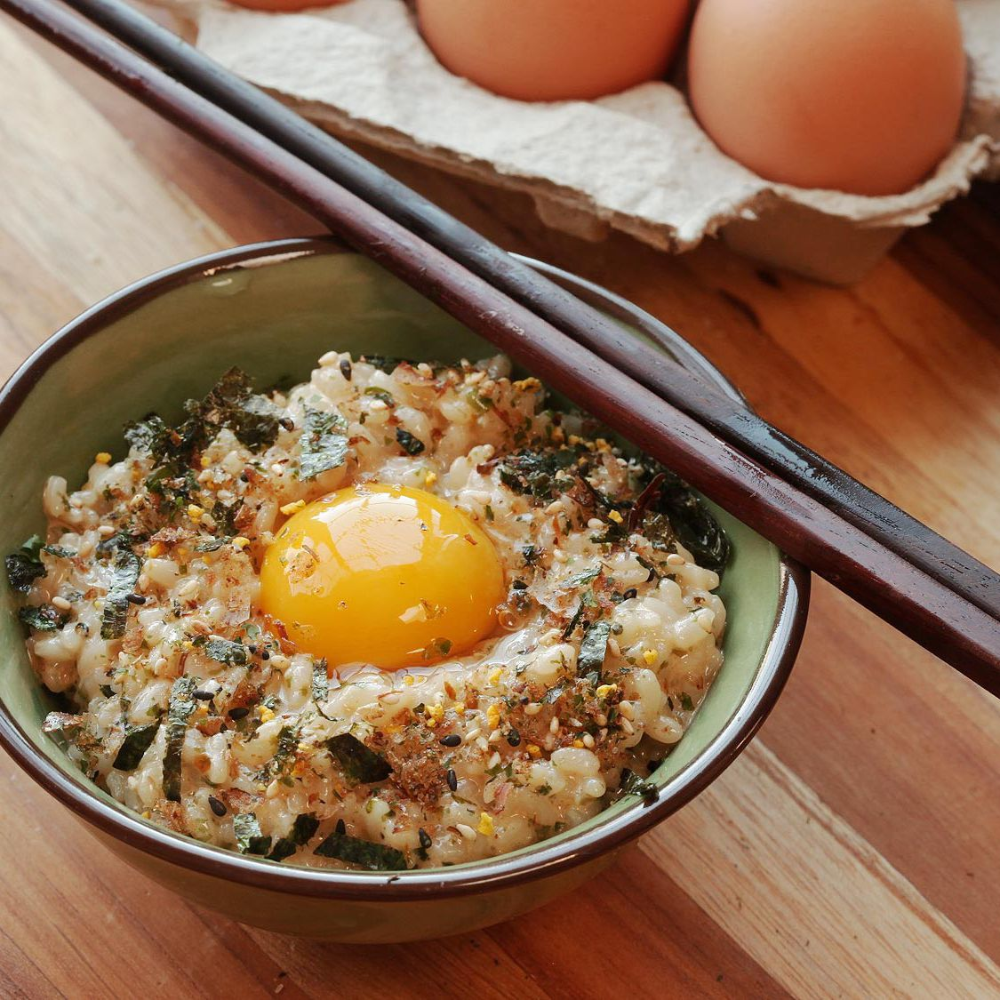

Description
Tamago Kake Gohan (or egg over rice) is a popular Japanese confort food typically eaten for breakfast.
It's a quick and easy dish to create. It has a silky, creamy texture with bursts of umami flavor.
Ingredients
- 1 cup hot cooked white rice
- 1 large egg (plus 1 optional egg yolk)
- 1/2 teaspoon soy sauce
- 1/2 teaspoon mirin
- Pinch kosher salt
- Pinch MSG powder (optional)
- Pinch Hondashi (optional)
- Furikake to taste (optional)
- Thinly sliced or torn nori to taste (optional)
Steps
- Place rice in a bowl and make a shallow indentation in the center.
Break the whole egg into the center. Season with 1/2 teaspoon soy sauce,
1/2 teaspoon mirin (if using), a pinch of salt, a pinch of MSG (if using),
and a pinch of Hondashi (if using).
- Stir vigorously with chopsticks to incorporate egg; it should become
pale yellow, frothy, and fluffy in texture. Taste and adjust seasonings
as necessary.
- Sprinkle with furikake and nori (if using), make a small indentation
in the top, and add the other egg yolk (if using). Serve immediately.